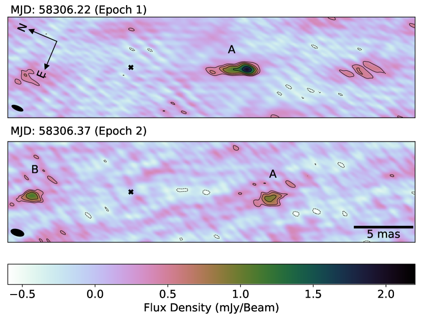
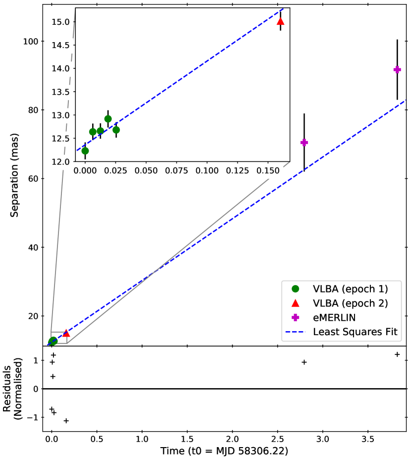
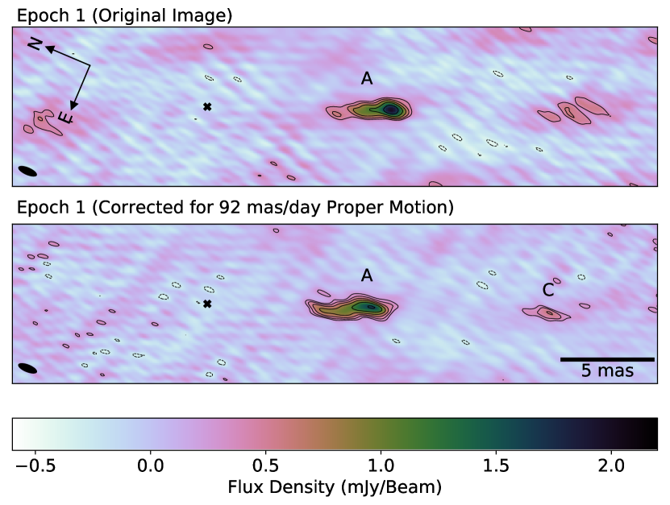
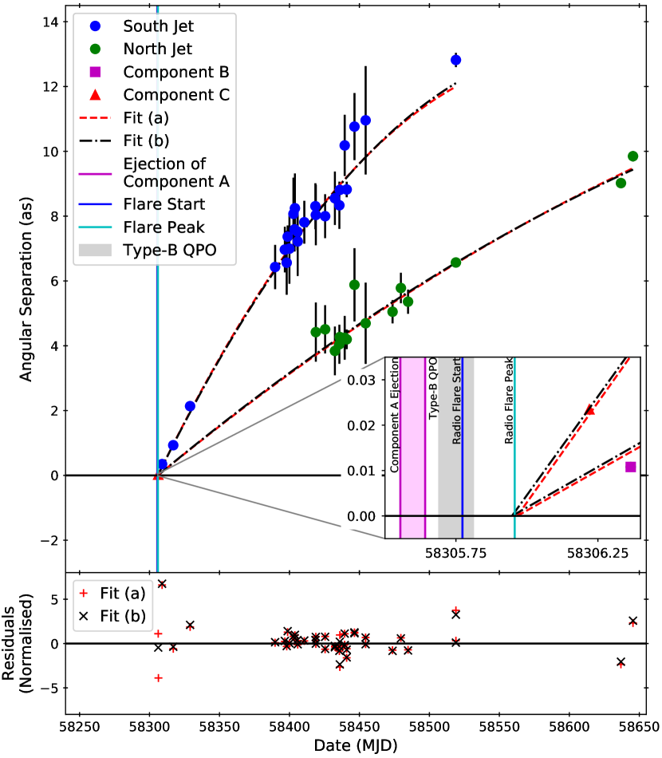
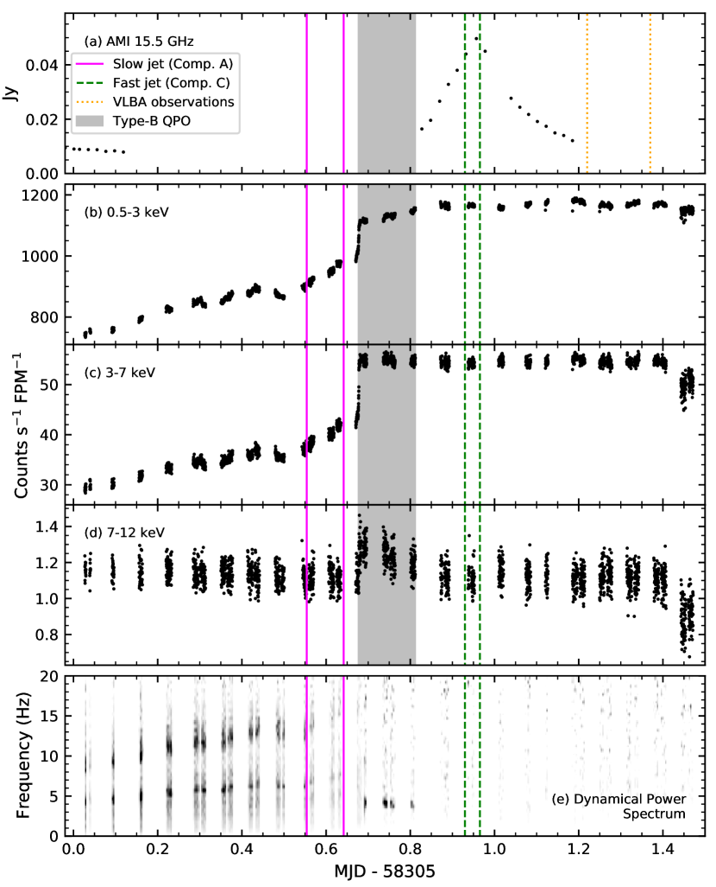

الحركيات المتغيرة لمقذوفات متعددة من ثنائي الأشعة السينية للثقب الأسود MAXI J1820+070
الملخص
خلال اندلاع في عام 2018، رُصد ثنائي الأشعة السينية ذي الثقب الأسود MAXI J1820+070 رصدا شاملا عند أطوال موجية متعددة أثناء انتقاله من الحالة الصلبة إلى الحالة اللينة. وخلال هذا الانتقال لوحظ تطور سريع في خواص التوقيت في الأشعة السينية وتوهج راديوي قصير العمر، وربط كلاهما بإطلاق مقذوفات نسبية ثنائية القطب طويلة البقاء. نقدّم تحليلا تفصيليا لرصدين بمصفوفة الخطوط القاعدية الطويلة جدا، مستخدمين كلا من التقسيم الزمني وتقنية جديدة لتتبّع مركز الطور الديناميكي من أجل تخفيف آثار التلطيخ عند رصد مقذوفات سريعة الحركة بدقة زاوية عالية. نحدد قذفا ثانيا أسبق، بحركة ذاتية أصغر قدرها ملي ثانية قوسية يوم-1. وقد قُذفت هذه العقدة النفاثة الجديدة قبل ساعة من بداية ارتفاع التوهج الراديوي، وقبل ساعة من التحول من التذبذبات شبه الدورية في الأشعة السينية من النوع C إلى النوع B (QPOs). نبيّن أن هذه النفاثة قُذفت على مدى فترة مقدارها ساعة، ومن ثم كان قذفها متزامنا مع انتقال QPO. وتمكّن تقنيتنا الجديدة من تحديد القذف الأصلي الأسرع في رصد لم يكن قد كُشف فيه من قبل. وباستخدام هذا الكشف راجعنا ملاءمات الحركات الذاتية للمقذوفات وحسبنا زاوية ميل النفاثة فوجدناها ، وسرعات النفاثة للمقذوفات السريعة الحركة () و للقذف البطيء الحركة المحدد حديثا (). نبيّن أن المكوّن البطيء الحركة المقترب هو المسؤول غالبا عن التوهج الراديوي، ويرجح أنه مرتبط بالتحول من QPOs من النوع C إلى النوع B، في حين لم تُحدد أي بصمة قذف حاسمة للمقذوفات السريعة الحركة.
keywords:
النجوم: الثقوب السوداء – الأشعة السينية: الثنائيات – النجوم: أفراد: MAXI J1820+070 – النجوم: النفاثات – التنامي، أقراص التنامي – التقنيات: الدقة الزاوية العالية1 مقدمة
تتكوّن أنظمة ثنائيات الأشعة السينية منخفضة الكتلة (LMXB) إما من ثقب أسود كتلته نجمية أو من نجم نيوتروني ينامي كتلة من نجم مرافق ثنائي منخفض الكتلة. وقد حددت أرصاد هذه الأجرام عند ترددات الأشعة السينية والراديو حالتي تنام معيارية، هما الحالة الصلبة والحالة اللينة. وأثناء الاندلاعات تمر LMXBs عادة بانتقالات بين الحالتين الصلبة واللينة عبر حالات وسيطة (Homan and Belloni, 2005). ومن السمات المميزة للحالة الصلبة وجود نفاثات قوية ومستمرة، لا تكون موجودة في الحالة اللينة. وتُرى نفاثات منفصلة وعابرة عند الانتقال من الحالة الصلبة إلى الحالة اللينة، ولكن لا تُرى أثناء الانتقال العكسي (Fender et al., 2004). وخلال الانتقال من الحالة الصلبة إلى الحالة اللينة عبر الحالات الوسيطة، يُرى تطور سريع في خواص التوقيت في الأشعة السينية. ففي بداية الانتقال تكون تذبذبات شبه دورية منخفضة التردد وقوية من النوع C (QPOs) موجودة عادة، لكنها تُستبدل لاحقا غالبا بتذبذبات QPOs من النوع B (انظر Ingram2020, لمناقشة QPOs منخفضة التردد). ويُعتقد أن وجود QPOs من النوع B مرتبط بإطلاق النفاثات العابرة (مثلا Fender et al., 2009; Miller-Jones et al., 2012; Russell_2019).
دُرست حالات التنامي وعلاقتها بتشكّل النفاثات النسبية منذ زمن طويل لفهم ديناميات أحداث إطلاق النفاثات (Fender et al., 2004). وقد كان أحد محاور هذه الدراسات محاولة تأكيد الصلة السببية بين التغيرات في تدفق التنامي وإطلاق المقذوفات العابرة عند انتقال الحالة. ومع أن اقتراحات طُرحت بأن بصمات طيفية أو توقيتية معينة تقابل لحظة إطلاق النفاثة (مثلا Fender et al., 2009; Miller-Jones et al., 2012)، فإن الندرة النسبية في التغطية ذات الدقة الزاوية العالية وعدم اليقين في أزمنة قذف النفاثات المستنتجة يعنيان أننا لا نزال نفتقر إلى بصمة حاسمة للتغيرات في تدفق التنامي التي تؤدي إلى إطلاق النفاثات العابرة.
اكتُشف MAXI J1820+070/ASASSN-18ey (ويشار إليه فيما بعد باسم J1820) أول مرة عند الأطوال الموجية البصرية في 7 مارس 2018 بواسطة المسح الآلي لكامل السماء بحثا عن المستعرات العظمى (ASAS-SN; Tucker et al., 2018)، ثم حُدد بوصفه نظاما ثنائيا جديدا للأشعة السينية عقب كشفه عند أطوال موجية للأشعة السينية في 11 مارس بواسطة راصد صورة الأشعة السينية لكامل السماء (MAXI) (Kawamuro et al., 2018). وقد تأكد منذ ذلك الحين ديناميكيا أنه يستضيف ثقبا أسود (Torres et al., 2019)، وحددت قياسات اختلاف المنظر الراديوية في الحالة الصلبة أن بعده هو kpc (Atri et al., 2020)، بما يتفق مع القيمة kpc من إصدار بيانات Gaia المبكر 3 (Gaia Collaboration et al., 2020)، بعد تطبيق تصحيح نقطة الصفر المعتمد على الموضع (lindergren2020) واستخدام السابق الخاص بـ Atri et al. (2019).
كان J1820 في الحالة الصلبة بين اكتشافه في مارس 2018 ويوليو 2018، حين خضع لانتقال من الحالة الصلبة إلى اللينة (Homan2018a; Tetarenko et al., 2018b). وبقي J1820 في الحالة اللينة حتى بداية أكتوبر 2018، حين عاد إلى الحالة الصلبة (Homan2018b). وخلال اندلاعه في 2018 رُصد J1820 على نطاق واسع عند أطوال موجية متعددة ومختلفة (مثلا Shidatsu et al., 2019; Homan et al., 2020; wang2020; kosenkov2020; buisson2021). وحدث الانتقال بين الحالة الصلبة والحالة اللينة، حيث مر J1820 بالحالات الوسيطة، بين MJD 58303.5 و58310.7 (Shidatsu et al., 2019). وكشفت تغطية الأشعة السينية باستخدام مستكشف البنية الداخلية للنجوم النيوترونية (NICER) تغيرات سريعة في خواص تغير الأشعة السينية لـ J1820 أثناء الانتقال من الحالة الصلبة إلى اللينة. ورُصد تحول من QPOs من النوع C إلى QPOs من النوع B، بالتزامن مع توهج صغير في نطاق 7–12 keV (Homan et al., 2020). وبعد فترة وجيزة من هذا التغير في خواص تغير الأشعة السينية، أبلغ Bright et al. (2020) عن توهج راديوي قصير العمر (12 ساعة) بدأ عند MJD ، وكُشف باستخدام مصفوفة Arcminute Microkelvin Imager-Large Array (AMI-LA). وربط Homan et al. (2020) التغير في خواص تغير الأشعة السينية والتوهج الراديوي بقذف مقذوفين طويلَي البقاء ويبدوان أسرع من الضوء، تابعهما Bright et al. (2020) وهما ينتقلان في اتجاهين متعاكسين بعيدا عن اللب.
تُظهر الأرصاد الراديوية لهذه المقذوفات باستخدام شبكة المقياس الراديوي متعددة العناصر المتصلة (eMERLIN)، وتلسكوب Meer Karoo Array Telescope (MeerKAT)، ومصفوفة Karl G. Jansky Very Large Array (VLA)، ومصفوفة Very Long Baseline Array (VLBA)، على امتداد فترة تزيد على 200 يوم، أن المقذوفات تنتقل إلى انفصالات زاوية تبلغ عدة ثوان قوسية ( AU مسقطة على مستوى السماء؛ Bright et al., 2020). وكان المكوّن النفاث المقترب يتحرك نحو الجنوب، والمكوّن المبتعد المقابل نحو الشمال. وعقب هذه الكشوف الراديوية، شُغّل تلسكوب الأشعة السينية Chandra لرصد إعادة السطوع اللاحقة في اتجاه مجرى النفاثات أثناء تباطؤها عند اصطدامها بمنطقة أكثف من الوسط بين النجمي، مكوّنة صدمات خارجية. وباستخدام البيانات الراديوية لـ Bright et al. (2020) مقترنة بأرصاد Chandra، لاءم Espinasse et al. (2020) الحركات الذاتية لهذه المقذوفات بنموذج تباطؤ ثابت. ووجدوا حركات ذاتية ابتدائية مقدارها و ملي ثانية قوسية يوم-1 للمكوّنين الشمالي والجنوبي، على التوالي، مع تسارعين مقدارهما و ملي ثانية قوسية يوم-2، على التوالي، وتاريخ قذف مستنتج هو MJD .
يمكن أن يؤدي التصوير عالي الدقة الزاوية لمقذوفات تتحرك بهذه الحركات الذاتية الكبيرة إلى تلطيخ الصورة، إذ تقطع المكوّنات أجزاء مهمة من عنصر الدقة أثناء الرصد. وهذا ينتهك افتراضا أساسيا في قياس التداخل ذي الخطوط القاعدية الطويلة جدا (VLBI)، وهو أن المصدر يبقى غير متغير خلال الرصد. وقد استُخدمت مقاربات متعددة لتصوير الأنظمة الديناميكية، من مقاربة التقسيم الزمني المباشرة نسبيا (مثلا Fomalont et al., 2001; Miller-Jones et al., 2019) إلى إجراء التصوير الديناميكي الأكثر تطورا الذي وضعه اتحاد تلسكوب أفق الحدث (Johnson et al., 2017).
نصف هنا تقنية جديدة لتقليل التلطيخ في صور المقذوفات السريعة الحركة. ونستخدم هذه التقنية لكشف القذف النسبي المقترب السريع الحركة الذي وصفه Bright et al. (2020) وEspinasse et al. (2020) في رصد VLBA لـ J1820، حيث لم يكن هذا المكوّن قد كُشف سابقا. ونقدم تحليلا محسنا لرصدين من VLBA، ونحدد، عبر التقسيم الزمني، العقدة النفاثة التي كُشفت سابقا بواسطة VLBI بوصفها مكوّنا منفصلا بطيء الحركة ومتميزا عن المقذوفات السريعة الحركة التي تابعها Bright et al. (2020). وباستخدام هذه المعلومات، نراجع ملاءمات الحركات الذاتية للمقذوفات السريعة الحركة، ونبحث تبعات ذلك على المعلمات الفيزيائية للنفاثة والاقتران بين التغيرات في تدفق التنامي وقذف النفاثة.
2 الطرائق
2.1 الأرصاد والمعايرة
عقب الكشف الأولي للاندلاع في نطاق الأشعة السينية (Kawamuro et al., 2018) والنطاق البصري (Tucker et al., 2018)، رصدنا J1820 باستخدام VLBA عبر حقب متعددة بين 2018 مارس 16 وديسمبر 22، تحت رمز المشروع BM467. أخذنا عدة حقب من البيانات الفلكية الموضعية في الحالتين الصلبتين عند بداية الاندلاع ونهايته، كما فصّل Atri et al. (2020). غير أننا نركز في هذا العمل فقط على البيانات المأخوذة أثناء انتقال الحالة من الصلبة إلى اللينة وبعده مباشرة في يوليو 2018. رصدنا في اثني عشر يوما بين 7 و25 يوليو، عند تردد إما 4.98 أو 15.26 GHz، تبعا للطقس وسلوك المصدر. يسرد الجدول 1 معلمات الأرصاد.
| Epoch | Date | MJD | Time | Frequency |
|---|---|---|---|---|
| (d/m/y) | (UTC) | (GHz) | ||
| 1 | 07/07/2018 | 04:51 - 05:38 | 15.26 | |
| 2 | 07/07/2018 | 08:25 - 09:08 | 15.26 | |
| 3 | 08/07/2018 | 05:39 - 07:22 | 15.26 | |
| 4 | 09/07/2018 | 08:51 - 09:38 | 4.98 | |
| 5 | 10/07/2018 | 03:51 - 04:38 | 4.98 | |
| 6 | 10/07/2018 | 08:51 - 09:38 | 4.98 | |
| 7 | 11/07/2018 | 04:51 - 04:37 | 4.98 | |
| 8 | 11/07/2018 | 08:09 - 08:52 | 4.98 | |
| 9 | 13/07/2018 | 04:06 - 04:52 | 4.98 | |
| 10 | 13/07/2018 | 07:54 - 08:37 | 4.98 | |
| 11 | 14/07/2018 | 05:36 - 06:22 | 4.98 | |
| 12 | 16/07/2018 | 05:36 - 06:22 | 4.98 | |
| 13 | 18/07/2018 | 06:51 - 07:37 | 15.26 | |
| 14 | 20/07/2018 | 05:06 - 05:52 | 4.98 | |
| 15 | 22/07/2018 | 06:09 - 07:53 | 15.26 | |
| 16 | 25/07/2018 | 03:39 - 05:22 | 4.98 |
رصدنا بمعدل تسجيل 2048 Mbps، مما أعطى عرض نطاق قدره 256 MHz لكل استقطاب، مقسما إلى ثمانية أزواج تردد وسيط (IF) بعرض 32 MHz. استخدمنا ICRF J180024.7+384830 (Ma1998, ويشار إليه فيما بعد باسم J1800+3848) مصدرا لتعيين الأهداب، وICRF J181333.4+061542 (beasley2002, ويشار إليه فيما بعد باسم J1813+0615) معايرا مرجعيا للطور، وRFC J1821+0549 مصدرا للتحقق. ورُبطت البيانات باستخدام مترابط DiFX البرمجي (Deller et al., 2011)، وعُيرت وفق الإجراءات القياسية ضمن نظام معالجة الصور الفلكية (AIPS، الإصدار 31DEC17؛ Wells, 1985; Greisen, 2003). وبعد التصحيحات القبلية لمعاملات اتجاه الأرض عند زمن الترابط، صححنا دوران فاراداي الأيوني والتأخر التشتتي باستخدام خرائط المحتوى الإلكتروني الكلي. ثم أجرينا تصحيحات قبلية لانزياحات العيّانات الرقمية وللزوايا البرالاكتية المتغيرة للمغذيات، قبل معايرة السعات باستخدام قيم درجة حرارة النظام المسجلة. استخدمنا مصدر تعيين الأهداب الساطع J1800+3848 لتحديد استجابة التردد الآلية، ولتصحيح الأطوار والتأخيرات والمعدلات الآلية. وأخيرا، أجرينا عدة جولات من المعايرة الذاتية على معاير مرجعية الطور J1813+0615 لبناء أفضل نموذج ممكن، استُخدم لحساب حلول طور وتأخير ومعدل متغيرة زمنيا جرى استيفاؤها إلى المصدر الهدف.
2.2 التصوير
أُنجز التصوير باستخدام AIPS، مطبقا خوارزمية CLEAN (Högbom, 1974). ولم تسفر إلا الحقبتان الأوليان، وكلتاهما أُخذت في 7 يوليو لكن يفصل بينهما ساعة، عن كشوف لـ J1820، ويرجح أن ذلك عائد إلى اجتماع انخفاض السطوع والتمدد الأدياباتي لمقذوفات النفاثة. لذلك نركز على هاتين الحقبتين في بقية هذا العمل.
انتقلت المقذوفات السريعة الحركة التي وصفها Bright et al. (2020) وEspinasse et al. (2020) عبر الحزمة المركبة لأرصاد VLBA في مدة لا تتجاوز 10 دقيقة، وهي أقصر من طول الأرصاد. ونتيجة لذلك، تتلطخ هذه المكوّنات على نحو ملحوظ في صور VLBA لدينا. ولتخفيف ذلك اعتمدنا مقاربتين مختلفتين.
2.2.1 التقسيم الزمني
صوّرنا الرصد الأول (الحقبة 1) كاملا، ثم قسمناه إلى 5 حاويات زمنية طول كل منها دقائق، وصوّرنا كل واحدة منها لاحقا. اخترنا حجم الحاويات الزمنية ليكون أصغر ما يمكن بحيث يظل مكوّن نفاث متميز قابلا للكشف في كل حاوية زمنية. ولم يكن بالإمكان تقسيم الرصد الثاني (الحقبة 2) زمنيا بسبب انخفاض نسبة الإشارة إلى الضجيج (SNR)، لذلك عاملناه بوصفه حاوية زمنية واحدة. أُجري هذا التقسيم الزمني لتحديد الحركات الذاتية للمكوّنات المرئية في هذه الأرصاد. لاءمنا ذروة الإشعاع في كل حاوية زمنية بمصدر نقطي، ثم حسبنا الانفصال الزاوي وزاوية الموضع للذروة بالنسبة إلى الموضع المستنتج للبّ من القياسات الفلكية الموضعية الراديوية لـ Atri et al. (2020).
مع أن مقاربتنا في التقسيم الزمني تتيح لنا تتبع حركة المكوّنات، فإنها تؤدي أيضا إلى انخفاض الحساسية. وقد لا تُكشف المصادر الخافتة السريعة الحركة، التي لا يمكن كشفها في الرصد الكامل بسبب مقدار كبير من التلطيخ، في الحاويات الزمنية القصيرة. لذلك طبقنا تقنية جديدة لمحاولة كشف أي مكوّنات ربما طُمست إلى ما دون حد القابلية للكشف بسبب الحركات الذاتية الكبيرة.
2.2.2 تتبّع مركز الطور الديناميكي
في هذه التقنية تُقسم الأرصاد إلى عدد كبير من الحاويات الزمنية المنفصلة، بحيث لا يقطع المصدر المتحرك في كل حاوية زمنية أكثر من 1/5 من الحزمة المركبة. وباستخدام حركة ذاتية يحددها المستخدم، تُحسب المسافة التي يتحركها المصدر في كل حاوية زمنية، ويُزاح مركز الطور لبيانات الخاصة برصد المصدر في كل حاوية زمنية للتعويض عن هذه الحركة. وتكون النتيجة سلسلة من الحاويات الزمنية تظهر فيها الذروة المتحركة في الموضع نفسه بالنسبة إلى مركز الطور المحدّث. ومع اصطفاف قمم المصدر المتحرك الآن في كل حاوية زمنية، تُدمج بيانات من جميع الحاويات الزمنية لإنتاج صورة يتتبع مركز طورها المكوّن أثناء حركته. وتختلف هذه التقنية عن التقسيم الزمني الموصوف أعلاه، إذ تنتج مجموعة بيانات واحدة وصورة واحدة، بدلا من سلسلة صور فردية أقل حساسية. طبقنا هذه التقنية باستخدام واجهة ParselTongue بلغة Python إلى AIPS (Kettenis et al., 2006)11 1 تطبيقنا متاح عبر مستودع GitHub. وتشبه هذه التقنية تقنية التتبع الاصطناعي المستخدمة لكشف وتتبع الكويكبات القريبة من الأرض والحطام الفضائي السريعة الحركة عند الأطوال الموجية البصرية (مثلا Tyson1992Kuiper; Yanagisawa2005; Shao2014Tracking; Zhai2014Tracking; Zhai2020Tracking)، مع أننا طبقنا تقنيتنا في مجال الرؤى لا في مجال الصورة.
3 النتائج
نعرض أولا الصور القياسية لكل حقبة من دون تقسيم زمني أو تتبع ديناميكي لمركز الطور. وتظهر صور الحقبتين 1 و2 في الشكل 1. تبين اللوحة العليا صورة الحقبة 1. وتهيمن على هذه الصورة مكوّن نفاث واحد ممدود وغير متماثل، يتألف من عقدة ساطعة مدمجة تتبعها ذيل منتشر يشير نحو الموضع المستنتج للب J1820 (Atri et al., 2020). ونشير إلى هذا باسم المكوّن A. يبلغ طول هذا المكوّن mas وله كثافة تدفق كلية مدمجة mJy، حيث إن عدم اليقين هو حيث هو ضجيج rms في الصورة و هو عدد الحزم المركبة المستقلة في المنطقة الممتدة كما أبلغت عنه مهمة AIPS المسماة TVSTAT. وقد نُسبت بنيته الممتدة في البداية إلى التلطيخ الناجم عن حركة ذاتية كبيرة، مع أن ذلك لا يفسر بنيته غير المتماثلة.
تظهر صورة الحقبة الثانية، المأخوذة بعد ساعة، في اللوحة السفلى. ونسبة الإشارة إلى الضجيج (SNR) في الحقبة الثانية أدنى بكثير منها في الحقبة الأولى نتيجة خفوت انبعاث المكوّنات. وتظهر في هذه الصورة مقذوفتان؛ المكوّن A إلى الجنوب والمكوّن B إلى الشمال. ويقع المكوّن A على انفصال زاوي أكبر عن موضع اللب مما كان عليه في الحقبة الأولى، مبينا حركة هذا القذف بين الرصدين. وفي هذه الحقبة الثانية لم يعد المكوّن A ممتدا بوضوح على محور النفاثة، وإن لم يكن مصدرا نقطيا مثاليا. ويعني الانبعاث الأخفت من هذا المكوّن في هذا الرصد، مقترنا بالتغطية المتفرقة في uv، أننا لسنا حساسين لأي بنية منتشرة ممتدة. ولا يُكشف المكوّن B كشفا مهما إلا في الحقبة الثانية. كان J1820 في الحالة الوسيطة اللينة أثناء هذين الرصدين كليهما (Homan et al., 2020)، ولذلك لا يُكشف اللب في صورنا، كما هو متوقع (Fender et al., 2004).
بالنسبة إلى المقذوفات السريعة الحركة، حدّد Bright et al. (2020) أن المكوّن المتحرك إلى الجنوب مقترب، بينما المكوّن الشمالي مبتعد. وسيكون الأمر نفسه للمقذوفات المرئية في هذه الأرصاد، أي إن المكوّن A مقترب والمكوّن B مبتعد. وقد عرض Bright et al. (2020) أصلا صورة للحقبة الأولى، وحُدد المكوّن A فيها. وافترض أن هذا المكوّن هو نفسه القذف المقترب السريع الحركة وطويل البقاء الذي شوهد وهو ينتقل إلى انفصالات بمقياس الثواني القوسية باستخدام eMERLIN وMeerKAT وVLA. واستُخدم كشف VLBA لهذا المكوّن لتقييد حركة المقذوفات السريعة الحركة لدى Bright et al. (2020) وEspinasse et al. (2020).
في صورتنا للحقبة الأولى، يبدو أن هناك ذروة إلى شمال لب J1820 عند انفصال زاوي قدره mas، في موضع مشابه للموضع الذي حُل فيه المكوّن B في الحقبة الثانية. وقد عرّف Bright et al. (2020) هذا على أنه النظير المبتعد للمكوّن A. وهذه الذروة ليست مصدرا نقطيا مدمجا، ولا تزيد دلالتها إلا على . وهذا مماثل لقمم ضجيج أخرى في مواضع أخرى من الصورة، مما يشير إلى وجوب الحذر عند تحديد ما إذا كان هذا كشفا حقيقيا بالفعل.

3.1 التقسيم الزمني
بعد التصوير الأولي لكلتا الحقبتين، أجرينا التقسيم الزمني (كما في القسم 2.2.1) لتحديد الحركة الذاتية للمكوّن A المرئي في الشكل 1. وقد حُل المكوّن A في كل حاوية زمنية من الحقبة الأولى، ولوحظ أنه ممتد بدرجة مشابهة لما في صورة الرصد الكامل (الشكل 1). ولم يقلل التقسيم الزمني تلطيخ هذا المكوّن، مما يشير إلى أن الحركة داخل الرصد ليست على الأرجح سبب بنيته الممتدة. وقسنا موضع المكوّن A في كل حاوية زمنية بملاءمة الذروة بمصدر نقطي في مستوى الصورة. وتبدو حركة المكوّن أبطأ بكثير من حركة القذف المقترب السريع الحركة الذي حدده Bright et al. (2020)، والذي كان قد رُبط به في البداية. لاءمنا الحركة الذاتية لهذا المكوّن بنموذج سرعة ثابتة. وباستقراء حركة هذا المكوّن، وجدنا أن موضعه متوافق (ضمن ) مع قياسين من eMERLIN أجراهما Bright et al. (2020) عند MJD وMJD . وكان هذان الكشفان قد عُدا أصلا شذوذين ظهرا إلى جانب القذف المقترب السريع الحركة. ولم يكن واضحا ما إذا كان هذان الكشفان جزءا من بنية أكبر للقذف السريع الحركة حُجبت تفاصيلها بالحل، أم إنهما يمثلان قذفا منفصلا تماما. ومع وجود قياسين فقط، لم يكن ممكنا توصيف حركة هذا المكوّن توصيفا كافيا، رغم أن Bright et al. (2020) قدّر أنه أُطلق في وقت قريب من زمن المقذوفات السريعة الحركة استنادا إلى حركته بين الحقبتين. ويدل توافق قياسات eMERLIN مع ملاءمة الحركة الذاتية للمكوّن A على أنها تعود إلى القذف نفسه.
ونظرا إلى عدم وجود دليل على التباطؤ، لاءمنا الحركة الذاتية لهذا المكوّن بنموذج سرعة ثابتة، مستخدمين قياسات eMERLIN وقياسات VLBA لدينا (باستخدام البيانات المقسمة زمنيا من الحقبة 1). وتظهر أفضل ملاءمة لدينا في الشكل 2، وأعطت حركة ذاتية مقدارها ملي ثانية قوسية يوم-1 عند زاوية موضع شرقا من الشمال. وهذا يعطي تاريخ قذف مستنتجا هو MJD . وتُعطى عدم اليقين للمعلمات الملاءمة عند مستوى . ويظهر الشكل 2 بعض التشتت في انفصالات القمم المقاسة من البيانات المقسمة زمنيا، بما يتجاوز المتوقع من عدم اليقين الإحصائي. وقد يكون تطور البنية الممتدة للمكوّن A أثناء الرصد مسؤولا عن هذا التشتت في مواضع القمم. ولمراعاة ذلك أضفنا عدم يقين منهجيا قدره mas تربيعيا إلى عدم اليقين الإحصائي الناتج عن ملاءمة مواضع القمم. واختير عدم اليقين المنهجي هذا للحصول على قيمة مخفضة مقدارها 1 للملاءمة. ويقابل عدم اليقين هذا ربع حجم الحزمة المركبة، وهو أمر ليس غير معقول. ولم تُلاءم إلا حركة المكوّن A، لأن المكوّن B يظهر فقط في الحقبة 2، التي لم يكن بالإمكان تقسيمها زمنيا بسبب انخفاض SNR.

3.2 تتبّع مركز الطور الديناميكي
مع تحديد المكوّن A بوصفه متميزا عن المقذوفات السريعة الحركة التي وصفها Bright et al. (2020)، يصبح غياب القذف المقترب السريع الحركة لافتا. وتتنبأ ملاءمة Espinasse et al. (2020) بأن يكون المكوّن المقترب السريع الحركة واقعا عند انفصال زاوي mas عن اللب في الحقبة الأولى، ومتحركا بحركة ذاتية مقدارها ملي ثانية قوسية يوم-1. وعند هذه الحركة الذاتية، ينبغي أن يتحرك المكوّن مسافة تعادل 6 ضعف عرض الحزمة المركبة أثناء الحقبة الأولى، مما يلطخ انبعاثه على تلك المنطقة. لذلك طبقنا تقنية تتبع مركز الطور الديناميكي (كما في القسم 2.2.2) لمحاولة كشف هذا المكوّن. طبقنا هذه التقنية إجرائيا، متنقلين عبر مجال من الحركات الذاتية بين ملي ثانية قوسية يوم-1 عند زاوية الموضع التي لاءمها Espinasse et al. (2020). وكشفت تقنية تتبع مركز الطور الديناميكي باستمرار عن مكوّن عند انفصال زاوي mas عن اللب، وعند زاوية موضع شرقا من الشمال، ونسمّيه المكوّن C. يعرض الشكل 3 الصورة الأصلية للحقبة الأولى في اللوحة العليا، والصورة المصنوعة عند تطبيق التقنية لحركة ذاتية مقدارها ملي ثانية قوسية يوم-1. وعند هذه الحركة الذاتية كان المكوّن C في أشد سطوعه، وكُشف بدلالة مع كثافة تدفق mJy beam-1. ومع أن تطبيق التقنية بحركة ذاتية مقدارها ملي ثانية قوسية يوم-1 أعطى الكشف الأكثر سطوعا، فقد كُشف المكوّن بدلالة مشابهة عبر مجال الحركات الذاتية المستخدم، مع ذروة كشف عريضة حول ملي ثانية قوسية يوم-1. ولم يكن هذا المكوّن قابلا للكشف القوي سابقا في الحقبة الأولى بسبب تلطيخ الانبعاث على حزم متعددة. وفي الصورة الأصلية للحقبة 1 (الشكل 1) يبدو أن هناك بعض الضجيج في المنطقة التي كُشف فيها المكوّن C، ويرجح أن ذلك عائد إلى تلطيخ الانبعاث. وأدى تطبيق تقنية تتبع مركز الطور الديناميكي على الحقبة الأولى إلى خفض مستوى الضجيج من 0.14 إلى 0.11 mJy beam-1. ولم يؤد تطبيق التقنية نفسها على الحقبة الثانية بالمجال نفسه من الحركات الذاتية إلى كشف، عند حد قدره mJy beam-1.
استُخدمت تقنية تتبع مركز الطور الديناميكي أيضا للبحث عن مكوّن مبتعد في كلتا الحقبتين لمجال من الحركات الذاتية بين ملي ثانية قوسية يوم-1، غير أنه لم يُكشف أي مكوّن مبتعد جديد في أي من الحقبتين. وحد الكشف هو mJy beam-1 للحقبة الأولى و mJy beam-1 للحقبة الثانية. وطبقنا أيضا تقنية تتبع مركز الطور الديناميكي على الحقبة الثالثة في 8 يوليو، بحثا عن كشف لأي من المكوّنات A أو B أو C، لكن لم تُسجل كشوف فوق حد كشف 5 قدره mJy beam-1.
تُعطى الانفصالات الزاوية وزوايا الموضع وكثافات التدفق الذروية الملاءمة ومستويات ضجيج الصورة لجميع مكوّناتنا المكتشفة في الجدول 2.

| Epoch | Source | Separation | Position Angle | Fitted Flux Density | Image RMS |
|---|---|---|---|---|---|
| (mas) | East of North | (mJy beam-1) | (mJy beam-1) | ||
| 1 | Component A | ||||
| Component Cb | |||||
| 2 | Component A | ||||
| Component B |
| a For the extended component we report on the fitted flux density of the peak of the emission and not the total integrated flux density. |
| b Component detected following dynamic phase centre tracking. |
| c Separation with respect to the core position in the central time bin. |
4 المناقشة
حُلّت ثلاثة مكوّنات متميزة في هذه الأرصاد؛ المكوّن A، المرئي مقتربا في كلتا الصورتين في الشكل 1، والمكوّن B، المرئي مبتعدا في الحقبة الثانية (الصورة السفلى في الشكل 1)، والمكوّن C، المكتشف في الحقبة الأولى بتطبيق تقنية تتبع مركز الطور الديناميكي لتصحيح حركته الذاتية الكبيرة، كما يظهر في اللوحة السفلى في الشكل 3. ويسهم فهم كل من هذه المكوّنات في الصورة الكاملة لأحداث القذف في J1820. ونناقش الآن كلا منها تباعا.
4.1 المكوّن A
يبدو أن المكوّن A ينتقل أبطأ بمقدار مرة من القذف المقترب السريع الحركة الذي وصفه Bright et al. (2020) وEspinasse et al. (2020)، والذي كُشف بوصفه المكوّن C في الحقبة 2. ويتوافق قياسا eMERLIN اللذان أجراهما Bright et al. (2020) عند MJD وMJD مع ملاءمة الحركة الذاتية للمكوّن A في أرصادنا. وبوجود كشوف eMERLIN هذه إلى جانب قياسات VLBA المقسمة زمنيا لدينا، يمكننا توصيف هذا المكوّن توصيفا سليما بوصفه قذفا منفصلا أبطأ حركة بحركة ذاتية مقدارها ملي ثانية قوسية يوم-1. ولا يُظهر المكوّن A حركة ظاهرية أسرع من الضوء، إذ تبلغ سرعته الظاهرية c. وقد أدرجت ملاءمات الحركة الذاتية للمكوّن C ونظيره المبتعد لدى Bright et al. (2020) وEspinasse et al. (2020) موضع المكوّن A من مجموعة بيانات VLBA الأولى على نحو غير صحيح. وبعد تحديد هذا المكوّن بوصفه متميزا عن المكوّن C، نراجع هذه الملاءمات في القسم 4.4.
لا يتحرك المكوّن A بسرعة كافية كي يفسر التلطيخ البنية الممتدة المرئية في الصورة الأولى في الشكل 1، مما يشير إلى أن المكوّن ممتد جوهريا. علاوة على ذلك، لا يبدو المكوّن ممتدا بالقدر نفسه في الحقبة الثانية في الشكل 1. ويرجح أن يكون ذلك نتيجة الحساسية. فبحلول الحقبة الثانية يكون المكوّن قد تمدد، مما خفض سطوع سطحه بعد أن انتشر انبعاثه على مساحة أكبر، وجعله أصعب كشفا. ثم إن انخفاض SNR في هذا الرصد والتغطية المتفرقة في uv يحدان من قدرتنا على حل البنية الممتدة. وغالبا ما تُنمذج نفاثات LMXB الناتجة عن أحداث قذف منفصلة كمصادر نقطية. ومع ذلك فقد رُصدت مقذوفات ممتدة من قبل، كما في حالة GRO J1655-40 (Hjellming and Rupen, 1995; Tingay et al., 1995)، وقد تكون ناتجة من حدث قذف طويل المدة. وبالنظر إلى الحجم التقريبي للمكوّن A في الحقبة الأولى وحركته الذاتية، وبافتراض سرعة قذف مستقرة وثابتة، يمكننا تقدير مدة حدث القذف بأنها ساعة. وإذا كان المكوّن A يتمدد شعاعيا بسرعة مماثلة لحركته الكتلية إلى أسفل مجرى النفاثة، فإن مدة القذف المستنتجة ستكون أقصر من تقديرنا. ولا تستطيع بياناتنا تقييد سرعة تمدد المكوّن A، غير أننا نعلم أن المكوّن A لا يمكن أن يتمدد شعاعيا بطريقة منتظمة تماما، نظرا إلى بنيته الممدودة. وبالعكس، إذا كانت المادة المقذوفة أولا تنتقل بسرعة أبطأ من المادة المقذوفة لاحقا، أو إذا كان السطح العامل للنفاثة قد تباطأ كثيرا بفعل تفاعلاته مع الوسط بين النجمي (ISM)، فقد تكون مدة القذف الحقيقية أطول مما نقدره؛ ومن ثم لا يسعنا إلا تقديم هذا التقدير التقريبي لمدة القذف بافتراض سرعة ثابتة. ومع انتقال القذف عبر ISM، تتسارع الجسيمات بالصدمة عند السطح العامل، مما ينتج انبعاثا غير متماثل.
وعلى خلاف المكوّن C الأسرع حركة، لا نرصد تباطؤا في المكوّن A. ومع أننا لا نستطيع تتبع حركته إلا حتى mas، فلا يمكننا وضع قيود قوية على غياب التباطؤ. وقد عُزي تباطؤ المكوّن C إلى التفاعل المستمر مع ISM (Espinasse et al., 2020). وقد اقتُرح أن ثنائيات الأشعة السينية توجد في فقاعات منخفضة الكثافة (Heinz, 2002; Hao2009Cavities). ومن نتائج ذلك أن المقذوفات ستملك في البداية حركة قذفية قبل أن تبدأ في التباطؤ أثناء تفاعلها مع ISM الأكثر كثافة عند حافة التجويف منخفض الكثافة. واقترح Espinasse et al. (2020) أن هذا قد يكون الحال للمكوّن C، مع أن الدليل الرصدي لم يكن كافيا لاستخلاص أي استنتاجات قوية. كما عزا Bright et al. (2020) معدل الاضمحلال البطيء جدا للانبعاث الراديوي من النفاثات إلى التفاعل المستمر مع ISM. وقد تجادل السرعة الثابتة للمكوّن A المرئية في الشكل 2 ضد التباطؤ عند انفصالات زاوية صغيرة عن اللب، مع أن ذلك قد يعود بدلا من ذلك إلى حركته الذاتية المنخفضة نسبيا، بحيث لا يكون أي تباطؤ صغير للمكوّن A ملحوظا على امتداد عمره القصير نسبيا.
4.2 المكوّن B
شوهد المكوّن B مبتعدا في الرصد الثاني كما يظهر في اللوحة الثانية في الشكل 1. وليس واضحا مباشرة ما إذا كان هذا المكوّن هو النظير للمكوّن A المقترب أم للمكوّن C. ويمكن استخدام الحركة الذاتية للمكوّن A لتقدير قيمة من
| (1) |
حيث هي سرعة النفاثة مطبعة بسرعة الضوء، و هي زاوية ميل النفاثة إلى خط البصر، و هو البعد إلى J1820 (Mirabel and Rodríguez, 1999). وقد حدّد Atri et al. (2020) زاوية ميل النفاثة للمقذوفات السريعة الحركة بأنها باستخدام قياسهم لبعد J1820 والحركات الذاتية لدى Bright et al. (2020). ومن المعقول افتراض (في غياب المبادرة السريعة كما في V404 Cygni؛ Miller-Jones et al., 2019) أن زاوية الميل لم تتغير كثيرا في الزمن بين قذف المكوّنين A وC. وباستخدام البعد وزاوية الميل لدى Atri et al. (2020)، نحدد قيمة للمكوّن A بأنها . وفي أي زمن معطى تكون نسبة الانفصالات الزاوية للمقذوفات المقتربة والمبتعدة المتناظرة جوهريا هي
| (2) |
فإذا افترضنا أن المكوّن B هو النظير للمكوّن A، فإن النسبة المقاسة ستدل على قيمة . وهاتان القيمتان لـ متوافقتان، مما يشير إلى أن المكوّن B هو على الأرجح النظير المبتعد للمكوّن A البطيء الحركة. ومع ذلك، ما زلنا ننظر في الارتباط الممكن للمكوّن B بالمكوّن C السريع الحركة عندما نراجع ملاءمات Espinasse et al. (2020) في القسم 4.4.
إذا كانت ذروة الضجيج المرئية في الحقبة الأولى في موضع مشابه للمكوّن B كشفا حقيقيا، فلا يمكننا ربطها بالمكوّن B، لأنها أبعد قليلا عن اللب مما يكون عليه المكوّن B في الحقبة الثانية. وفي القسم 4.4 نناقش ما إذا كانت هذه الذروة قد تكون النظير المبتعد للمكوّن C.
ليس واضحا لماذا لا يُكشف المكوّن B في الحقبة الأولى. فمن الممكن أن الصدمات الخارجية (أو الداخلية) التي تسرّع الجسيمات في النفاثة وتولّد الانبعاث لم تكن قد حدثت بعد في المكوّن B بحلول الحقبة الأولى، ربما نتيجة تباين خواص الوسط المحيط بحسب الاتجاه، أو أن المكوّن B كان لا يزال سميكا بصريا في الحقبة الأولى. ومن الممكن أيضا أن يكون المكوّن B قد حُجب بوسط ماص حر-حر خلال الحقبة الأولى، أو أنه كان ممتدا بدرجة كافية في الحقبة الأولى بحيث انتشر تدفقه على عدد من الحزم، ومن ثم لم يمكن كشفه.
4.3 المكوّن C
طبقنا تقنية تتبع مركز الطور الديناميكي على أول رصد VLBA (الحقبة 1). وعند تطبيق التقنية لحركة ذاتية مقدارها ملي ثانية قوسية يوم-1 وجدنا كشفا بدلالة لمكوّن، كما يظهر في الشكل 3. وكان هذا المكوّن غير مكتشف سابقا في هذه الحقبة بسبب التلطيخ الناتج من حركته الذاتية الكبيرة. غير أن حركته الذاتية وموضعه يقوداننا إلى تعريفه بأنه المكوّن السريع الحركة الذي تابعه Bright et al. (2020) وEspinasse et al. (2020).
ومن تقدير حجم القذف لدى Bright et al. (2020) وبافتراض معدل تمدد ثابت، كان هذا المكوّن سيتمدّد بمعدل بين و ملي ثانية قوسية يوم-1. وهذا يضع حجم المكوّن C في مجال 2–40 mas في حقبتنا الأولى، و3–70 mas في حقبتنا الثانية. ويفحص VLBA حجما زاويا أعظميا قدره 7–10 mas، ومن ثم فإن المكوّنات الأكبر من ذلك ستُحل إلى خارج الرصد. ولم يُر المكوّن C في الحقبة 2، ويرجح أن ذلك لأنه أصبح كبيرا ومنتشرا إلى درجة يتعذر معها كشفه بواسطة VLBA، حتى مع تتبع مركز الطور الديناميكي. ومن المهم ملاحظة أن معدل التمدد الظاهري ليس ثابتا إذا كان المكوّن يتباطأ. إذ تُعدّل سرعة التمدد المرصودة لمكوّن ما بمعامل دوبلر النسبي (Miller-Jones2006)، حيث هو عامل لورنتز الكتلي، ومن ثم مع تباطؤ المكوّن وانخفاض يزداد معدل التمدد المرصود. وهذا مهم فقط إذا كان المكوّن نسبيا بدرجة كبيرة، كما هي الحال للمكوّن C (انظر القسم 4.4). غير أن قيودنا على معدل التمدد ليست كافية لتقييد أي انخفاض في Gamma.
4.4 ملاءمات محدثة للحركة الذاتية
| Fit | ||||||
|---|---|---|---|---|---|---|
| (mas day-1) | (mas day-2) | (mas day-1) | (mas day-2) | (MJD) | (Reduced) | |
| (a) | 3.0 | |||||
| (b) | 2.6 |

تضمنت ملاءمة الحركة الذاتية للمقذوفات السريعة الحركة لدى Espinasse et al. (2020) المكوّن A من حقبة VLBA الأولى لدينا (الشكل 1). وبعد تحديد هذا بوصفه قذفا متميزا أبطأ حركة، إلى جانب الكشف الجديد للمكوّن C عبر تتبع مركز الطور الديناميكي، راجعنا هذه الملاءمة. استخدمنا البيانات الراديوية لـ Bright et al. (2020) من eMERLIN وMeerKAT وVLA، وبيانات الأشعة السينية لـ Espinasse et al. (2020) من Chandra في ملاءماتنا. وأجرينا ملاءمتين مختلفتين؛ الأولى باستخدام المكوّنين B وC معا، والثانية باستخدام المكوّن C فقط، لأننا نعتقد أن المكوّن B قد يكون النظير المبتعد للمكوّن A (القسم 4.2). وتستخدم كلتا الملاءمتين نموذج تباطؤ ثابت كما في Espinasse et al. (2020). وتظهر هذه الملاءمات في الشكل 4 وتُلخص في الجدول 3.
كانت قيمة المخفضة للملاءمة التي تضم كلا مكوّني VLBA هي ، وكانت القيمة للملاءمة التي تستخدم المكوّن C فقط هي . ويمكن عزو الانخفاض في قيمة المخفضة إلى عدم اليقين المنخفض في موضع المكوّن B. وهذه القيم المخفضة لـ أصغر من قيمة الملاءمة التي أجراها Espinasse et al. (2020) والتي ضمت المكوّن A، مما يمنحنا ثقة بأنها تمثل على نحو أفضل الحركة الذاتية الحقيقية للمقذوفات السريعة الحركة (المكوّن C).
لم تُزح ملاءماتنا المحدثة للحركة الذاتية للنفاثة السريعة (التي حذفت المكوّن A لكنها أدرجت المكوّن C المكتشف حديثا) تاريخ القذف المستنتج إزاحة مهمة عن التاريخ الذي حدده Espinasse et al. (2020). غير أن الملاءمات المحدثة تخفض الحركة الذاتية الابتدائية للمكوّن C () من ملي ثانية قوسية يوم-1 إلى ملي ثانية قوسية يوم-1. وتنتج تقنية تتبع مركز الطور الديناميكي ألمع كشف للمكوّن C عند حركة ذاتية مقدارها ملي ثانية قوسية يوم-1، لكنه لا يزال يُكشف بدلالة مشابهة عند ملي ثانية قوسية يوم-1. ولا يتفق الموضع المتوقع للنظير المبتعد للمكوّن C عند زمن حقبتنا الثانية مع الموضع المقاس للمكوّن B بمقدار 3 mas. ومع أن ذلك أكبر بكثير من الحزمة المركبة، فهو مماثل لحجم المكوّن B (الشكل 1)، لذلك فإن فرق الموضع لا يستبعد الارتباط تماما. وتكون ملاءمات الحركة الذاتية للمقذوفات السريعة الحركة مع المكوّن B ومن دونه متفقة ضمن عدم اليقين. واستنادا إلى هذه الملاءمات وحدها، يمكننا على نحو معقول تعريف المكوّن B بأنه النظير لأي من المكوّنين A أو C. غير أنه بما أن المكوّن B يمكن أن يرتبط معقولا بالمكوّن A (القسم 4.2)، فإننا نختار بحذر حذف المكوّن B عند تحديد الحركات الذاتية للمقذوفات السريعة الحركة.
باستخدام هذه الملاءمات المحدثة، حسبنا الانفصال الزاوي المتوقع للمكوّن السريع الحركة المبتعد (أي النظير المبتعد للمكوّن C) في الحقبة الأولى فكان mas، وهو متوافق مع الموضع المقاس لذروة الضجيج الصغيرة في الحقبة الأولى (الشكل 1). وإذا كانت هذه الذروة كشفا حقيقيا فقد تكون النظير المبتعد للمكوّن C، مع أنها اختفت عندما طبقنا تقنية تتبع مركز الطور الديناميكي للحركة الذاتية المتوقعة لهذا المكوّن. وهذا يشير إلى أن هذه الذروة ليست على الأرجح النظير المبتعد للمكوّن C، وربما لا تمثل انبعاثا حقيقيا.
ومع ملاءمات الحركة الذاتية المحدثة، يمكن تحديث زاوية ميل النفاثة من Atri et al. (2020). وبافتراض أن النفاثات متناظرة جوهريا، يمكن تحديد زاوية ميل النفاثة وسرعاتها تحديدا وحيدا من
| (3) |
| (4) |
(Mirabel and Rodríguez, 1994; Fender et al., 1999). وباستخدام السرعات الابتدائية للملاءمات المحدثة، حسبنا زاوية ميل مقدارها ، وهي متفقة مع زاوية الميل التي وجدها Atri et al. (2020) باستخدام ملاءمات Bright et al. (2020). ومع زاوية الميل المحدثة هذه، حُسبت سرعة المقذوفات السريعة الحركة فبلغت c. ومن الحركة الذاتية للمكوّن A، استخدمنا زاوية الميل المراجعة لدينا لتحديد سرعته الجوهرية فوجدناها c.
ينتقل المكوّن C أسرع من المكوّن A بمقدار مرة. وقد رُصدت سابقا أحداث قذف متعددة تنتقل فيها المقذوفات بسرعات متشابهة، مثل GRS 1915+105 (Fender et al., 1999; Dhawan et al., 2000; Miller-Jones et al., 2005). كما رُصدت مقذوفات متعددة من النظام نفسه بسرعات مختلفة كثيرا، مثل ثنائي الأشعة السينية النجمي النيوتروني Scorpius X-1 (Fomalont et al., 2001)، ومع اندلاعي 2003 و2009 لـ H1743-322 (McClintock2009; Miller-Jones et al., 2012). وأظهر اندلاع 2015 لـ V404 Cygni مقذوفات متعددة بحركات ذاتية مختلفة (Tetarenko et al., 2017; Miller-Jones et al., 2019). وليس واضحا ما الذي يحدد سرعات المقذوفات الفردية، ولماذا تختلف بين أحداث القذف، ولا سيما ضمن الاندلاع نفسه.
يمكن استخدام الحركات الذاتية المقاسة للنفاثات المتناظرة جوهريا لحساب أكبر بعد ممكن إلى مصدر ما يقابل (Mirabel and Rodríguez, 1999)،
| (5) |
وأظهر Fender2003ProperMotions أنه قرب هذا البعد الأقصى تميل قيمة إلى اللانهاية. وباستخدام الملاءمات المحدثة، حسبنا بعدا أقصى قدره kpc. وهذا متوافق مع البعد الذي قاسه Atri et al. (2020)، مما يعني أننا لا نستطيع وضع حد أعلى لقيمة للمقذوفات السريعة الحركة. ونحسب حدا أدنى مقداره . أما بالنسبة إلى المكوّن A فنحسب .
4.5 التوهج الراديوي
وصف Bright et al. (2020) وHoman et al. (2020) توهجا راديويا سريعا كان متزامنا مع تغيرات في خواص تغير الأشعة السينية لـ J1820، وربط Bright et al. (2020) التوهج بإطلاق المقذوفات السريعة الحركة (المكوّن C). ويظهر هذا التوهج الراديوي في الشكل 5 إلى جانب منحنيات ضوء الأشعة السينية وأطياف كثافة القدرة في الأشعة السينية وتواريخ القذف المستنتجة للمقذوفات البطيئة والسريعة الحركة (المكوّنان A وC) من ملاءمات الحركة الذاتية لدينا. وقع أول رصد VLBA لدينا بعد ساعة من ذروة التوهج الراديوي. وفي ذلك الوقت كانت كثافة التدفق المستوفاة لتوهج AMI-LA الراديوي mJy عند 15.5 GHz. وفي الحقبة الأولى يمتلك المكوّن A كثافة تدفق كلية مدمجة مقدارها mJy، مما يشير إلى أن هذا المكوّن هو المسؤول أساسا عن التوهج الراديوي. وهذا يتوافق مع قيود الحركة الذاتية لدينا، التي تفيد بأن المكوّن C قُذف متزامنا مع ذروة التوهج، بحيث لا يمكن أن يكون مسؤولا عن طور الارتفاع.
علاوة على ذلك، تشير معلمات النفاثة المشتقة لدينا إلى أن المكوّن C ونظيره سيخضعان لإضعاف دوبلري كبير، مما يقلل مساهمتهما في كثافة التدفق الكلية. وبالنسبة إلى النفاثات المتناظرة جوهريا، تُعطى نسب كثافة التدفق المستقبلة من المكوّنين المقترب والمبتعد ( و على التوالي) إلى كثافة التدفق المنبعثة في إطار سكون المصدر () بالعلاقة
| (6) |
حيث هو الفهرس الطيفي للانبعاث ()، و يصف هندسة المقذوفات (Mirabel and Rodríguez, 1999). وفي هذه الحالة يكون لانبعاث سنكروتروني رقيق بصريا، و للمقذوفات المنفصلة. وبالنسبة إلى المقذوفات السريعة الحركة، يكون معامل التعزيز الدوبلري هذا للمكوّن المقترب (المكوّن C) و للمكوّن المبتعد. وحُسبت الحدود العليا باستخدام الحد الأدنى . ومع أننا لا نعرف كثافة التدفق الجوهرية للمكوّن C، فقد يفسر ذلك مساهمة منخفضة في توهج AMI-LA الراديوي. ويشير ذلك أيضا إلى أن النظير المبتعد للمكوّن C يمكن أن يكون مضعفا بشدة إلى ما دون عتبة الكشف، ومن ثم فإن المكوّن B المبتعد المكتشف في الحقبة الثانية يقابل على الأرجح المكوّن A المقترب. ومن المهم ملاحظة أن كثافة التدفق المنبعثة ينبغي أن تتغير مع الزمن مع تمدد المقذوفات وخفوتها، لذلك لا يمكن مقارنة كثافات تدفق المكوّنات المقتربة والمبتعدة مباشرة باستخدام المعادلة (6) إلا عندما تكون عند انفصال زاوي متساو عن اللب (Miller-Jones2004JetEvolution). وباستخدام المعادلة (6) وكثافة التدفق المدمجة للمكوّن A في الحقبة الأولى، حسبنا كثافة التدفق المدمجة المتوقعة لنظيره المبتعد المتناظر فكانت mJy عند انفصال زاوي mas عن اللب. ولا يصل المكوّن B إلى هذا الانفصال الزاوي إلا بعد الحقبة الثانية، لذلك ينبغي أن يكون أسطع في الحقبة 2. غير أن هذه هي كثافة التدفق المدمجة الموزعة على عدة حزم، مما يجعل كثافة التدفق الذروية الأدنى التي قسناها متوافقة مع هذا التنبؤ.
لاءم Bright et al. (2020) وHoman et al. (2020) اضمحلالا أسيا لمنحنى ضوء AMI-LA الراديوي الواقع تحت ارتفاع التوهج الراديوي وذروته، وعُزي ذلك إلى خمود اللب الراديوي، الذي يبدو التوهج متميزا عنه. وتشير أرصاد الأشعة السينية لـ J1820 إلى أن النظام كان في الحالة الوسيطة اللينة أثناء ارتفاع توهج AMI-LA الراديوي وذروته (Homan et al., 2020)، ومن ثم لا نتوقع أن يكون اللب ساطعا ومسهما بقدر مهم في تدفق AMI-LA الراديوي لمدة معتبرة قبل أرصاد VLBA التي لم يُكشف فيها.
وبافتراض أن ذروة التوهج الراديوي تقابل النقطة التي يصبح عندها انبعاث السنكروترون من النفاثة رقيقا بصريا، استخدم Bright et al. (2020) تدفق ذروة التوهج الراديوي لتقدير الطاقة الداخلية للعقدة النفاثة التي تقابل التوهج الراديوي فكانت erg. وكما في fender2019synchrotron، وباستخدام كثافة تدفق ذروة التوهج الراديوي ( mJy) عند 15.5 GHz وعلى بعد 2.96 kpc، نقدر شدة مجال مغناطيسي للطاقة الدنيا للمكوّن A مقدارها G. وهذا من رتبة مقدار مماثلة لقوى المجال المغناطيسي الدنيا المحسوبة من التوهجات الراديوية في V404 Cygni وCygnus X-3 وGRS 1915+105 (fender2019synchrotron).

4.6 أحداث القذف
يقع تاريخ قذف المكوّن A قبل بداية التوهج الراديوي بمقدار ساعة وقبل بداية فترة QPO من النوع B والارتفاع المصاحب في معدل عد الأشعة السينية اللينة بمقدار ساعة، كما يظهر في الشكل 5. ونظرا إلى بنيته غير المتماثلة في الحقبة الأولى، نقيس الحركة الذاتية للذروة القائدة في المكوّن A، ومن ثم فإن تاريخ القذف المستنتج من ملاءمة الحركة الذاتية لا يحدد إلا بداية قذف هذا المكوّن. وبما أن مدة القذف المقدرة للمكوّن A هي ساعة، فلا بد أن الذيل الممتد للمكوّن A قد قُذف أثناء فترة QPO من النوع B، وأثناء ارتفاع التوهج الراديوي. وهذا يقدم بعض أقوى الأدلة حتى الآن على قذف نفاثة متزامن مع بصمة توقيتية محددة في الأشعة السينية من تدفق التنامي.
وبدلا من ذلك، وبالنظر إلى قربه من بداية فترة QPO من النوع B، يمكننا النظر في سيناريو تتزامن فيه بداية قذف المكوّن A مع بداية فترة QPO من النوع B. ولكي يكون ذلك ممكنا، يجب أن يخضع المكوّن لتباطؤ سريع ليصل إلى الانفصال والسرعة الثابتة اللذين يُرى وهو ينتقل بهما في الحقبة الأولى. وفي هذا السيناريو يُقذف المكوّن A عند بداية فترة QPO من النوع B ويتباطأ حتى ينتقل بسرعة ملي ثانية قوسية يوم-1 عند انفصال mas في بداية الحقبة الأولى. وبفرض هذه الشروط حسبنا حدا أدنى للسرعة الابتدائية والتسارع قدره ملي ثانية قوسية يوم-1 و ملي ثانية قوسية يوم-2 على التوالي.
كما نوقش في القسم 4.5، تشير كثافة التدفق المدمجة للمكوّن A، وكثافة التدفق الذروية للمكوّن C، والمستوى العالي من إضعاف دوبلر لنظير المكوّن C المبتعد غير المكتشف، إلى أن التوهج الراديوي ناجم عن المكوّن A البطيء الحركة. وقد يكون التأخير الزمني بالنسبة إلى تاريخ قذفه المستنتج ناتجا من آثار العمق البصري (مثلا Tetarenko et al., 2018a). فعندما يُقذف المكوّن A يكون في البداية سميكا بصريا. ومع تمدد القذف أدياباتيا يصبح رقيقا بصريا، ويبلغ انبعاث 15.5 GHz الذي تفحصه AMI-LA ذروته ثم ينخفض مع استمرار تمدد القذف. والتفسير الممكن الآخر يستدعي نموذج الصدمة في النفاثة (مثلا Jamil et al., 2010; Malzac, 2014)، الذي يفترض أن التوهج نتيجة صدمات داخلية عندما تصطدم قشرة من مادة مقذوفة بمادة أبطأ حركة قُذفت سابقا. ويعود التأخير بين تاريخ القذف والتوهج الراديوي إلى الزمن اللازم للقذف كي ينتقل إلى المسافة التي تقع عندها هذه الصدمات. ولم يُرصد أي توهج راديوي ثان يقابل قذف المقذوفات السريعة الحركة، ربما لأن التأخيرات المذكورة أعلاه كان يمكن أن تجعله يحدث أثناء فجوة في أرصاد AMI-LA.
تشير تواريخ قذف المكوّنين A وC إلى أنه قبل حقبة VLBA الأولى، لا بد أن المكوّن C قد مر بجانب المكوّن A أو اصطدم به لكي يوجد عند انفصال زاوي أكبر عن اللب. واستنادا إلى ملاءماتنا لهذين المكوّنين، فإن زمن التقاطع المحسوب لهذين القذفين هو MJD . ويحدث ذلك قبل ساعة من حقبتنا 1. ولا يوجد دليل على تفاعل بين المقذوفين في منحنيات ضوء AMI-LA الراديوية وNICER في الأشعة السينية (Homan et al., 2020). وربما قُذف المكوّن C بزاوية مختلفة قليلا عن المكوّن A، نتيجة مبادرة صغيرة لقرص التنامي حول محور النفاثة، كما شوهد في GRO 1655-40 (Hjellming and Rupen, 1995) وبدرجة أكبر بكثير في V404 Cygni (Miller-Jones et al., 2019). وقد كشفت أرصاد J1820 في الحالة الصلبة قبل اندلاعه في يوليو 2018 باستخدام تلسكوب تعديل الأشعة السينية الصلبة (Insight-HXMT) عن QPOs منخفضة التردد عبر مجال من الطاقات. واقتُرح أن سلوك QPO المرصود نتج على الأرجح من مبادرة قاعدة النفاثة المدمجة (Ma2021). وإذا كانت النفاثة (أو قرص التنامي) تبادر فعلا وأُطلق المكوّنان عند زاويتين مختلفتين قليلا، فقد يكون تفاعلهما ضئيلا.
وعلى الرغم من أن تاريخ القذف المستنتج للمكوّن C ونظيره المبتعد يقع بعد بداية فترة QPO من النوع B بمقدار ساعة، فقد يظل تطور خواص الأشعة السينية مرتبطا بقذف هذه المقذوفات السريعة الحركة إذا احتاجت إلى وقت لتتسارع إلى السرعة الابتدائية التي رُصدت بها. ومن افتراضات نموذج التباطؤ الثابت أن المقذوفات تُطلق عند الزمن بحركة ذاتية ابتدائية ، ولا يأخذ في الحسبان أي فترة تسارع ابتدائية، وهو ما سيحرك تاريخ القذف إلى وقت أبكر. وفي هذه الحالة يمكن أن تكون قد قُذفت إلى جانب المكوّن A أثناء فترة QPO من النوع B. غير أننا لا نملك دليلا تجريبيا على فترة التسارع المطولة المطلوبة. وبدلا من ذلك، قد يستغرق الأمر وقتا كي تظهر تغيرات تدفق التنامي المرصودة كتوهج في الأشعة السينية وتغير في خواص التوقيت على شكل قذف هذا المكوّن النفاث الثاني الأسرع.
حاول Miller-Jones et al. (2012) وRussell_2019 تحديد صلة بين التحول من QPOs من النوع C إلى النوع B وقذف نفاثات منفصلة في H1743-322 وMAXI J1535-571 على التوالي. ومع أن بياناتهما كانت توحي بوجود صلة، فإن الفجوات في تغطيتهما الراديوية وتغطية الأشعة السينية منعتهما من ربط هذه الظواهر ربطا حاسما. كما أبلغا عن ارتفاع في عد الأشعة السينية اللينة مشابه لما يُرى هنا، مع أن ارتفاع عد الأشعة السينية اللينة حدث قبل تحول QPO، بخلاف ما يُرى هنا. وكان عدم اليقين في تواريخ قذف H1743-322 وMAXI J1535-571 هو يوم و يوم على التوالي. ونتيجة أرصاد VLBA ذات الوتيرة الأعلى، والتقسيم الزمني، وذراع الرافعة القوية لأرصاد eMERLIN اللاحقة في اتجاه المجرى، تمكنا من تقييد زمن القذف إلى ضمن ساعة واحدة. وهذا، مقترنا بتغطية كثيفة من NICER للأشعة السينية، أتاح ربط قذف مادة النفاثة بتغير في خواص التوقيت في الأشعة السينية. واستنادا إلى حجج هندسية (مثل اعتماد قوة QPO على زاوية الميل) اقترح Motta2015Geometrical أن QPOs من النوع B مرتبطة بالنفاثات، ومع أن إطلاق مقذوفات منفصلة شوهد في أزمنة مشابهة لـ QPOs من النوع B، فهذه هي المرة الأولى التي يُظهر فيها أن قذفا كان يحدث أثناء ظهور QPOs من النوع B.
إن الفيزياء الكامنة وراء صلة القرص بالنفاثة مجال بحث نشط، وكما استُعرض مثلا في Ingram2020، لم يُحدد بعد أصل البصمات المتغيرة في الأشعة السينية مثل QPOs تحديدا جيدا. لم تلتقط المحاكاة العددية لتنامي الثقوب السوداء انتقالات الحالة التقاطا كاملا بعد، لكنها تقدم بالفعل بعض الاعتبارات المثيرة للاهتمام التي يمكن أن ترشد الحملات المستقبلية وتفسير ظواهر مثل المقذوفات التي نصفها. فأثناء التنامي يحمل القرص إلى الداخل و/أو يولد حقولا مغناطيسية يمكن أن تتشبع في النهاية قرب أفق الحدث وتوفر ضغطا كافيا لتعطيل التدفق الداخلي (الأقراص الموقوفة مغناطيسيا، أو MAD؛ Igumenshchev2003; Igumenshchevv2008; Tchekhovskoy2011). وبما أن المغنطة عند الأفق مرتبطة مباشرة بقدرة النفاثة (مثلا Komissarov2007; Tchekhovskoy2011)، يمكن توقع أن تكون مقذوفات النفاثات المنطلقة أثناء حالات MAD أسرع. وإطلاق المكوّن C الأسرع بعد المكوّن A الأبطأ أثناء انتقال الحالة يتوافق نوعيا مع التراكم التدريجي للتدفق المغناطيسي مع ازدياد سطوع المصدر في الاندلاع. أما الارتباط بـ QPOs من النوع B فأقل وضوحا، غير أن إعادة الاتصال المغناطيسي في محاكاة MAD يمكن أن تقود مقذوفات وتغيرات في التغيرية (Dexter2014). ومع أن هذا الأثر دُرس حتى الآن في الغالب للتوهجات في Sgr A* (Dexter2020; Porth2021, Chatterjee et al., subm.)، فإن محاكاة أعلى دقة بدأت تكشف تغيرات ديناميكية أكثر أهمية (Ripperda2020)، مما يتيح استكشاف الروابط بين التغيرية المستحثة بـ MAD وQPOs من النوع B، مع المقذوفات أثناء انتقالات الحالة.
وخلاصة القول، بيّنا لأول مرة أن حدث قذف كان يحدث أثناء الانتقال من QPOs من النوع C إلى النوع B. ويبدو أن هذا القذف (المكوّن A) مسؤول عن التوهج الراديوي اللاحق. وليس واضحا ما إذا كان المكوّن C الأسرع حركة مرتبطا أيضا بالتغير في معدل عد الأشعة السينية وخواص التوقيت عبر آلية قذف مؤجلة أو فترة تسارع. ويعني التأخير بين تطور تدفق التنامي وزمن القذف الملاءم للمكوّن C أننا لا نستطيع تحديد بصمة قذف حاسمة لهذا المكوّن، إن وجدت.
5 الاستنتاجات
نقدم تحليلا تفصيليا لرصدين من VLBA لـ MAXI J1820+070 أثناء الانتقال من الحالة الصلبة إلى اللينة عند MJD ، ونحدد قذفا مقتربا بطيء الحركة، لم يكن قد شوهد سابقا إلا في رصدين من eMERLIN لكنه رُبط خطأ بقذف أسرع حركة في أعمال سابقة. ومن خلال التقسيم الزمني لهذه الأرصاد من VLBA، حُددت الحركة الذاتية لهذا القذف فكانت ملي ثانية قوسية يوم-1 مع تاريخ قذف مستنتج هو MJD . وقد بدأ قذف هذا المكوّن البطيء الحركة قبل بداية ارتفاع التوهج الراديوي بمقدار ساعة، وقبل بداية فترة QPO من النوع B بمقدار ساعة. واستمر قذف هذا المكوّن مدة ساعة، ومن ثم كان متزامنا مع التغيرات في معدل عد الأشعة السينية وخواص التوقيت، ومع زمن ارتفاع التوهج الراديوي.
طُبقت تقنية جديدة لتخفيف آثار التلطيخ في الصور الناتجة من الحركات الذاتية الكبيرة، فأدت إلى كشف للقذف المقترب السريع الحركة في رصد VLBA لم يكن قد كُشف فيه سابقا. وعقب ذلك، حُدثت ملاءمات الحركة الذاتية للمقذوفات السريعة الحركة، فأعطت تاريخ قذف هو MJD ، الموافق لذروة التوهج الراديوي. واستخدمنا هذه الملاءمات المراجعة لحساب زاوية ميل للنفاثة مقدارها ، وسرعات نفاثة مقدارها للمقذوفات السريعة الحركة ()، و للقذف البطيء الحركة المحدد حديثا (). وليس واضحا ما المسؤول عن الفرق الكبير في سرعات هذه المقذوفات. وقد بينّا أن المكوّن المقترب البطيء الحركة مسؤول عن التوهج الراديوي، ويرجح أنه مرتبط بالتحول من QPOs من النوع C إلى النوع B، في حين لم تُحدد أي بصمة قذف حاسمة للمكوّن السريع الحركة.
الشكر والتقدير
المرصد الوطني لعلم الفلك الراديوي مرفق تابع للمؤسسة الوطنية للعلوم تديره Associated Universities, Inc. بموجب اتفاق تعاوني. وقد استفاد هذا العمل من مترابط Swinburne University of Technology البرمجي، المطوَّر بوصفه جزءا من برنامج المرافق الوطنية الكبرى الأسترالية للبحوث، والمشغّل بموجب ترخيص. يشكر SM الدعم المقدم من منحة VICI التابعة لـ NWO (مجلس البحوث الهولندي)، رقم المنحة 639.043.513. ويقر TMB وTDR بالمساهمة المالية من الاتفاقية ASI-INAF رقم n.2017-14-H.0. ويحصل VT على دعم من برنامج Laplas VI التابع للهيئة الوطنية الرومانية للبحث العلمي. كما يود المؤلفون الاعتراف بالدور الثقافي الكبير جدا وبالإجلال اللذين طالما حظيت بهما قمة Maunakea لدى المجتمع الهاوايي الأصلي. ونحن محظوظون جدا بإتاحة فرصة إجراء الأرصاد من هذا الجبل.
توافر البيانات
بيانات VLBA متاحة للعامة من أرشيف NRAO، تحت رمز المشروع BM467. ويتاح نص تتبع مركز الطور الديناميكي عبر مستودع GitHub.
References
- Potential kick velocity distribution of black hole X-ray binaries and implications for natal kicks. MNRAS 489 (3), pp. 3116–3134. Cited by: §1.
- A radio parallax to the black hole X-ray binary MAXI J1820+070. MNRAS 493 (1), pp. L81–L86. External Links: Document Cited by: §1, §2.1, §2.2.1, Figure 1, Figure 2, Figure 3, §3, §4.2, §4.4, §4.4.
- An extremely powerful long-lived superluminal ejection from the black hole maxi j1820+070. Nature Astronomy 4, pp. 697–703. External Links: Document Cited by: §1, §1, §1, §2.2, Figure 2, Figure 3, §3.1, §3.2, §3, §3, §4.1, §4.1, §4.2, §4.3, §4.3, §4.4, §4.4, §4.5, §4.5, §4.5, Table 3.
- DiFX-2: A More Flexible, Efficient, Robust, and Powerful Software Correlator. PASP 123 (901), pp. 275. External Links: Document, 1101.0885 Cited by: §2.1.
- AU-scale synchrotron jets and superluminal ejecta in GRS 1915105. ApJ 543 (1), pp. 373–385. External Links: Document, Link Cited by: §4.4.
- Relativistic x-ray jets from the black hole x-ray binary maxi j1820+070. ApJ 895, pp. L31. External Links: Document Cited by: §1, §1, §2.2, Figure 2, Figure 3, §3.2, §3, §4.1, §4.1, §4.2, §4.3, §4.4, §4.4, §4.4, Table 3.
- Towards a unified model for black hole X-ray binary jets. MNRAS 355 (4), pp. 1105–1118. External Links: Document Cited by: §1, §1, §3.
- MERLIN observations of relativistic ejections from GRS 1915+105. MNRAS 304 (4), pp. 865–876. External Links: ISSN 0035-8711, Document, Link, https://academic.oup.com/mnras/article-pdf/304/4/865/3567073/304-4-865.pdf Cited by: §4.4, §4.4.
- Jets from black hole X–ray binaries: testing, refining and extending empirical models for the coupling to X–rays. MNRAS 396 (3), pp. 1370–1382. External Links: Document Cited by: §1, §1.
- Scorpius x-1: the evolution and nature of the twin compact radio lobes. ApJ 558 (1), pp. 283–301. External Links: Document Cited by: §1, §4.4.
- Gaia Early Data Release 3: Summary of the contents and survey properties. arXiv e-prints, pp. arXiv:2012.01533. External Links: 2012.01533 Cited by: §1.
- AIPS, the VLA, and the VLBA. In Information Handling in Astronomy - Historical Vistas, Astrophysics and Space Science Library, Vol. 285, pp. 109. External Links: Document Cited by: §2.1.
- Radio lobe dynamics and the environment of microquasars. A&A 388 (2), pp. L40–L43. External Links: Document Cited by: §4.1.
- Episodic ejection of relativistic jets by the X-ray transient GRO J1655 - 40. Nature 375 (6531), pp. 464–468. External Links: ISSN 1476-4687, Link, Document Cited by: §4.1, §4.6.
- Aperture Synthesis with a Non-Regular Distribution of Interferometer Baselines. A&AS 15, pp. 417. External Links: Link Cited by: §2.2.
- The evolution of black hole states. In Astrophysics and Space Science, pp. 107–117. External Links: Document Cited by: §1.
- A rapid change in x-ray variability and a jet ejection in the black hole transient MAXI j1820+070. ApJ 891 (2), pp. L29. External Links: Document Cited by: §1, §3, Figure 4, Figure 5, §4.5, §4.5, §4.6.
- IShocks: x-ray binary jets with an internal shocks model. MNRAS 401 (1), pp. 394–404. External Links: Document, ISSN 1365-2966 Cited by: §4.6.
- Dynamical imaging with interferometry. ApJ 850 (2), pp. 172. External Links: Document Cited by: §1.
- MAXI/GSC detection of a probable new X-ray transient MAXI J1820+070. The Astronomer’s Telegram 11399, pp. 1. External Links: Link Cited by: §1, §2.1.
- ParselTongue: AIPS Talking Python. In Astronomical Data Analysis Software and Systems XV, C. Gabriel, C. Arviset, D. Ponz, and S. Enrique (Eds.), Astronomical Society of the Pacific Conference Series, Vol. 351, pp. 497. External Links: Link Cited by: §2.2.2.
- The spectral energy distribution of compact jets powered by internal shocks. MNRAS 443 (1), pp. 299–317. External Links: Document, ISSN 1365-2966 Cited by: §4.6.
- Multiple relativistic outbursts of GRS 1915+105: radio emission and internal shocks. MNRAS 363 (3), pp. 867–881. External Links: ISSN 0035-8711, Document, Link, https://academic.oup.com/mnras/article-pdf/363/3/867/3950674/363-3-867.pdf Cited by: §4.4.
- Disc–jet coupling in the 2009 outburst of the black hole candidate H1743−322. MNRAS 421 (1), pp. 468–485. External Links: ISSN 0035-8711, Document, Link, https://academic.oup.com/mnras/article-pdf/421/1/468/3134926/mnras0421-0468.pdf Cited by: §1, §1, §4.4, §4.6.
- A rapidly changing jet orientation in the stellar-mass black-hole system V404 Cygni. Nature 569 (7756), pp. 374–377. External Links: Document Cited by: §1, §4.2, §4.4, §4.6.
- A superluminal source in the galaxy. Nature 371 (6492), pp. 46–48. External Links: ISSN 1476-4687, Document, Link Cited by: §4.4.
- Sources of Relativistic Jets in the Galaxy. ARA&A 37, pp. 409–443. External Links: Document, astro-ph/9902062 Cited by: §4.2, §4.4, §4.5.
- X-ray and optical monitoring of state transitions in MAXI j1820+070. ApJ 874 (2), pp. 183. External Links: Document Cited by: §1.
- Tracking the variable jets of V404 Cygni during its 2015 outburst. MNRAS 482 (3), pp. 2950–2972. External Links: ISSN 0035-8711, Document, Link, https://academic.oup.com/mnras/article-pdf/482/3/2950/26607988/sty2853.pdf Cited by: §4.6.
- (Sub)-millimetre Observations of MAXI J1820+070 (ASASSN-18ey) Suggest Jet Quenching on July 6. The Astronomer’s Telegram 11831, pp. 1. Cited by: §1.
- Extreme jet ejections from the black hole X-ray binary V404 Cygni. MNRAS 469 (3), pp. 3141–3162. External Links: ISSN 0035-8711, Document, Link, https://academic.oup.com/mnras/article-pdf/469/3/3141/18211110/stx1048.pdf Cited by: §4.4.
- Relativistic motion in a nearby bright X-ray source. Nature 374 (6518), pp. 141–143. External Links: ISSN 1476-4687, Link, Document Cited by: §4.1.
- Dynamical confirmation of a black hole in MAXI j1820070. ApJ 882 (2), pp. L21. External Links: Document Cited by: §1.
- ASASSN-18ey: the rise of a new black hole x-ray binary. ApJ 867 (1), pp. L9. External Links: Document Cited by: §1, §2.1.
- NRAO’s astronomical image processing system (aips). In Data Analysis in Astronomy, pp. 195. External Links: Document Cited by: §2.1.